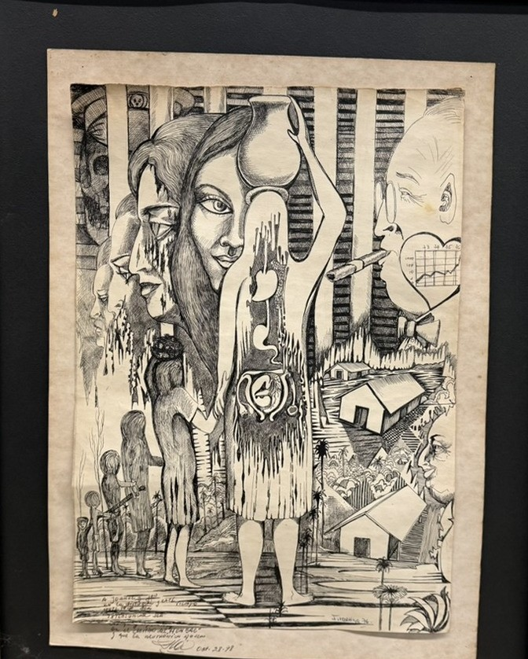

Click any photo to enlarge it.


Unidentified artist, signed “Firartiga 76”
Con fe y esperanza
(With Faith and Hope)
Title taken from the inscription. The artist’s own title is unknown.
Available
Price on request
Inquire about this workAbout this work
A densely worked pen-and-ink drawing built from fine cross-hatching. A woman balancing a water jar on her head stands at the centre. Around her are overlapping faces streaked with dripping black ink, a row of small figures, houses and palm trees, and, at the upper right, a man smoking a cigar beside a heart-shaped chart. The sheet is signed “Firartiga 76” in blue ink at the lower right.
Along the bottom edge the artist added a handwritten dedication in Spanish, dated October 28, 1978, so the drawing was given as a gift two years after it was made.
The inscription
A Joanne y Jon
en la distancia y en el tiempo
ante todo ser,
intensamente ser.
Con fe y esperanza
en el destino del “HOMBRE”
y que la neutrónica no sea.
To Joanne and Jon,
across distance and time,
above all, to be,
to be intensely.With faith and hope
in the destiny of “MAN”
and that the neutron [bomb] may not be.
The handwriting is looped and informal, so the translation is offered in good faith. The neutron bomb was a much-debated weapon in 1977–78.
Inquire
Interested in this work? Tell me a little about what you have in mind and I’ll be in touch.